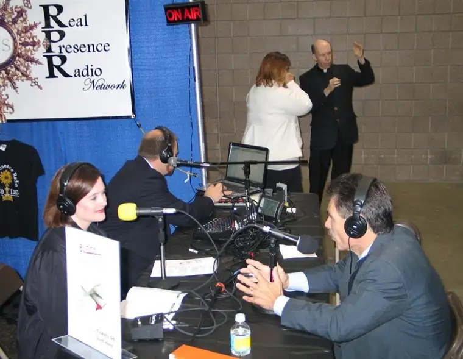

 |
| Interviewing Dr. Ray Gaurendi at the 2010 Marian Eucharistic Congress, Fargo |
{kind=link}
The question caught me off guard, tucked into an email by a friend as it was, out of the blue as it seemed.
“Do you regard yourself as an evangelical?”
This friend has come to know me in large part through my writing — email messages, manuscript excerpts and Facebook posts. So, mostly in the context of shared professional interests and less through a faith context. That’s part of the reason the question made me pause. That, and I was skeptical of what might follow.
He quickly clarified that he doesn’t view being an evangelical as a negative but he was simply curious and just had to ask.
And I was inspired to answer.
The short answer is of course! How could I not be? How could anyone who has been infected by the love of Christ not be inclined toward shouting it from the rooftops?
| Shouting it from the rooftops, and beaches… |
{kind=link}
And yet I also recognize that God made all of us different, with varying propensities and gifts. And that not every Christian considers him/herself an evangelical.
Here are the bare facts. Beginning from my childhood days, I seemed destined toward a life in the communications realm. One of my sister’s and my favorite past times was making up commercials on our mother’s cassette tape recorder. (Yes, I realize this dates me.) Commercials, newscasts, jingles, you name it, we wrote and acted out the scripts.
How should I answer, then? Is evangelical really the right word to describe who I am? Or is it more simply that I am a communicator?
Though they most certainly do deserve to be juxtaposed, “Catholic” and “Evangelical” historically have not shown up in the same sentence very often. There were the Catholic Christians, and then there were the Evangelical Christians. And the two were very different.
My sense is that this is what had my friend scratching his head.
So, this is the best I could offer.
At bottom, I’m a child of God. I’m also a Catholic in love with her faith and the God who is the source of it. And I’m a natural communicator — someone who enjoys sharing the vitality I feel with others in my life, whether through being inspired by someone’s writing and wanting others to be as well, or helping draw others to Christ through music, or writing articles or posts of my own to educate and/or help reveal something important to others or offer a bit of hope.
My faith has been important to me since childhood but it has grown in my adult years in a way that has been all-encompassing. I can no longer separate from my Catholic Christian identity, nor would I want to. And I cannot help but let the contents of my cup of life overflow.
If that makes me an evangelical, I am happy to wear that title, along with any others I might collect through the things to which I am drawn and the ways I try (though imperfectly) to live my life.
At the beginning of a statement on “The New Evangelization” by the United States Conference of Catholic Bishops, we are reminded of the passage from Scripture about faith being like the mustard seed:
“It is like a mustard seed that, when it is sown in the ground, is the smallest of all the seeds on the earth. But once it is sown, it springs up and becomes the largest of plants and puts forth large branches, so that the birds of the sky can dwell in its shade.” Mk 4: 31-32
The New Evangelization, according to the document, calls each of us to deepen our faith, believe in the Gospel message and go forth to proclaim the Gospel. It calls Catholics to be evangelized and then go forth to evangelize others, including through “re-proposing” the Gospel to those who have experienced a crisis of faith. It especially encourages Catholics to renew their relationship with Jesus Christ and his Church.
Somehow, I’ve gotten happily swept up in this enthusiasm for Jesus Christ and his Church and, as one predisposed to sharing the good things in life, I cannot help but, in turn, want others to be similarly enlivened. I keenly sense the brevity of life and know that we only have a certain amount of time to make a difference. So I choose to not hold back.
I know, too, that my efforts and what I have within me alone are not enough to change lives. It is Christ working through me that effects this enthsiasam as I continue to work each day to nurture and improve upon my own relationship with God.
Q4U: How do you feel about the term “evangelical?” Is it attractive or a turnoff? Does it ever apply to you?
{kind=link}